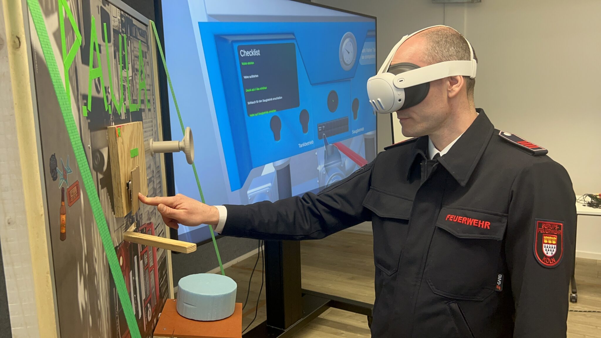

PAULA
Mixed Reality · Unity · Meta Quest 3 · C# · Meta SDK · Hand Tracking · Physical Prototyping · User Testing
P.A.U.L.A., short for Pump-Action-User-Learning-Application, was a three-person student project developed in collaboration
with the Cologne Fire Department. The idea behind the project was to explore how Mixed Reality could be used to train firefighters
in operating a fire pump without requiring access to an actual firefighting vehicle for every training session, but
instead of creating a completely virtual simulation, the goal was to build a low-cost physical replica of the pump and combine it with a virtual version
inside a Meta Quest 3. This would allow us to investigate whether having something physically present in front of the user would make the interaction feel
more natural and immersive. This was particularly important because the fire department itself described its firemen as being very hands-on and practical,
and we wanting to match their preferences as well as give them a more authentic training experience.
The main research question comming from this was:
How does integrating a physical object into an Mixed Reality training simulation influence immersion compared to purely virtual training methods?
I worked on the project together with two other students. While one of the other students was responsible for the 3D modeling needed for the virtual pump and the
other one was responsible for the physical prototype. I focused on the software development while helping in the construction of the
physical prototype and connecting the virtual and physical layers together.
Since we worked on this project in collaboration with the Cologne Fire Department, we were able to visit their training facility and get a
detailed explanation of the firepump itself and the steps a firemen would normally take to operate it. This was very helpful because it allowed us
to understand the process and the interactions needed to operate the pump, which we could then translate into the virtual training application.


After our visit at the training facility, we began to design all the individual training steps.
These steps included starting the engine, opening a valve, increasing the pressure to 7 bar, connecting the hose coupling,
and switching from tank operation to suction operation. Instead of simply presenting these steps as single instructions,
the application was designed to guide the user through the process interactively, following the steps that a firefighter would take in a real-world scenario.
The application was built in Unity with the Meta SDK providing the foundation for the Mixed Reality experience.
Because a simplified version of the opening of the valve and the increasing of the pressure interactions were already implemented in the project
phase prior to this I started by refining the already existing interactions. Especially the valve interaction was a difficult to implement because by then Meta did
not yet provide access to the camera feed of the Quest 3, which made it impossible to detect the specific hand pose we needed. Instead we had to rely
on the hand poses Meta provided, for interaction. This was a challenge because the hand poses usually neeed the user to completely close their hand,
which is a problem when trying to turn a valve because the users hand could not be fully closed while turning the valve. I tried to solve this problem by trying a lot
of different techniques, the most interesting probably being the use of an ESP32 together with a rotary encoder connected to the physical valve to detect the rotation
of the valve and then add it to the rotation of the virtual valve. While this worked well in testing it turned out to be a problem when the user was actually using
the system because wanted the application to run on the Quest 3 without needing a wired connection to the ESP or another device, and the wireless transmission of the
rotation data was not reliable enough to be used in the final application.


In the end we decided to use a more simple approach where we just used a trigger collider on the virtual valve and when the users hand entered this collider we would
start rotating the virtual valve based on the users hand rotation. This worked well enough for our purposes and was much more reliable than the ESP32 approach. That being said,
another student who used PAULA for his bachelor thesis later on was able to implement a more reliable version of the wireless ESP32 approach, which allowed for a more
realistic interaction with the valve.
To guide the participants, in the training we implemented ghost hands to visualize the correct hand positions, movements and which step is currently active.
These ghost hands were implemented as a 3D model of a transparent hand that was placed on the respective locations with the exact hand poses.
When one of the steps was completed, the ghost hands would move to the next position so the user would know whicht step to perform next.
We could have used a more simple approach where we would just block the next step until the user completed the previous one, but we wanted
to give the user the same freedom he would have with the real pump, where he could technically perform the steps in any order he wanted.
In later testing we found out that this was a necessary decision because a lot of the participants did not have any prior experience with extended reality trainings
and therefore did not know which hand poses were recognized by the Quest 3.
Another very important aspect of the we had to consider was that the user got feedback on whether he was performing the steps correctly or not.
This was especially important during our first testing phase as we tested the application with a group of other students at the university, who didn"t know what steps
were necessary to operate the pump. This was also very important when it came to the raising the pressure step, because we implemented a barometer that would show the current
pressure in the same way it is shown on the real pump. For the firefighters who will be using the app in the future, this was helpful because it allowed them to
check the current pressure in exactly the same spot as on the actual pump, but for people who had never operated a pump like that before, this information got a little lost.
For that reason we implemented a checklist on the front of the pump that would list all the steps and highlight them in a green color when they were completed.


With all these interactions implemented on our virtual pump we started to work on the physical counterpart. Our goal was to create a replica of the pump with all our interactions
using cheap available material, like wood, PLA, and cardboard. With these materials we were able to implement all our different interaction steps, using a 3D printed valve, a lever build with
wood and screws that could be adjusted to match the resistance of the lever on the real punp, buttons made with keyboard keys, and a Styrofoam cutout in the shape of the hose coupling
that can be attached to the prototype using Velcro. The physical prototype was then placed in front of the user and the virtual pump was placed on top of it, using a spatial anchor script that allowed
us to place the virtual pump wherever we wanted with the help of the Quest 3 controller.
During the development process, the prototype was tested at a university iteration exhibition.
This was one of the points where the project changed significantly because we were able to see
how people interacted with the system without having someone from the development team explain every step.
With the software development part and the physical prototype being almost done PAULA was compared with a version of the training where the interactions
were performed entirely in mid-air without the physical prototype.
In the study we used a crossover A/B design, meaning that one group experienced PAULA
first and the other version afterwards, while another group experienced the opposite order.
The evaluation included the System Usability Scale (SUS), User Experience Questionnaire (UEQ),
Igroup Presence Questionnaire (IPQ), and qualitative feedback.
The results were very interesting when looking at immersion. Nine participants
described PAULA as feeling more immersive than the mid-air version. At the same time,
the physical prototype was not perceived as purely beneficial. Nine participants described it
as both useful and disruptive, while three participants found it exclusively disruptive. I've linked the full documentation of the project below,
which goes into more detail about the whole project including study results and methodology.


After the project was completed, it was presented to the Cologne Fire Department. The feedback was very positive, and the department expressed its interest in further developing the project. Right now the project is being continued by a new team of students, and has grown into one of the IREX lab's core research lines. In the future PAULA is expected to receive funding from the Federal Ministry of Education and Research as well as from the European Union and to be developed into a full-scale application used by different fire departments in germany. If you are interested in learning more about the project, there are a few more resources available below. If you're still curios you can always contact me directly, and I will be happy to answer any questions you may have!